A musculatura da perna é dividida em três compartimentos:
Anterior: tibial anterior, extensor longo dos dedos, extensor longo do hálux e fibular terceiro.
Lateral: fibular longo e fibular curto.
E posterior – que é dividido em compartimentos:
Superficial: gastrocnêmio, sóleo e plantar.
E profundo: Poplíteo, tibial posterior, flexor longo dos dedos e flexor longo do hálux.
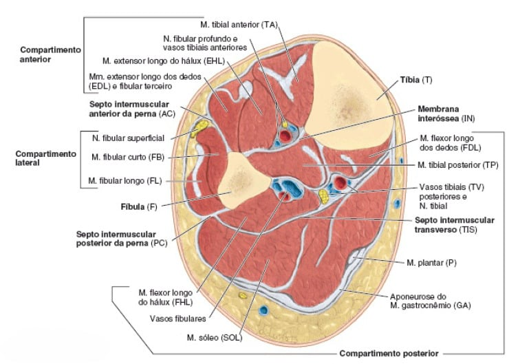
Inserção Proximal: Côndilo lateral da tíbia e ½ proximal da face lateral da tíbia e membrana interóssea.
Inserção Distal: Cuneiforme medial e base do 1º metatarsal.
Inervação: Nervo Fibular Profundo (L4 – S1).
Ação: Flexão dorsal e inversão do pé.
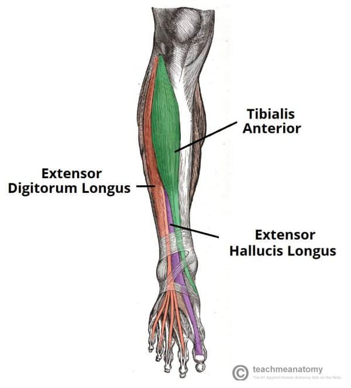
Inserção Proximal: Côndilo lateral da tíbia, ¾ proximais da fíbula e membrana interóssea.
Inserção Distal: Falange média e distal do 2º ao 5º dedos.
Inervação: Nervo Fibular Profundo (L4 – S1).
Ação: Extensão da MF, IFP e IFD do 2º ao 5º dedos.
Inserção Proximal: 2/4 intermediários da fíbula e membrana interóssea.
Inserção Distal: Falange distal do hálux.
Inervação: Nervo Fibular Profundo (L4 – S1).
Ação: Extensão do hálux, flexão dorsal e inversão do pé.
Inserção Proximal: 1/3 distal da face anterior da fíbula.
Inserção Distal: Base do 5º metatarsal.
Inervação: Nervo Fibular Profundo (L5 – S1).
Ação: Eversão do pé.
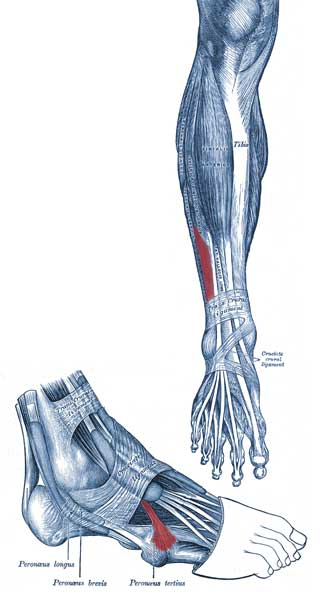
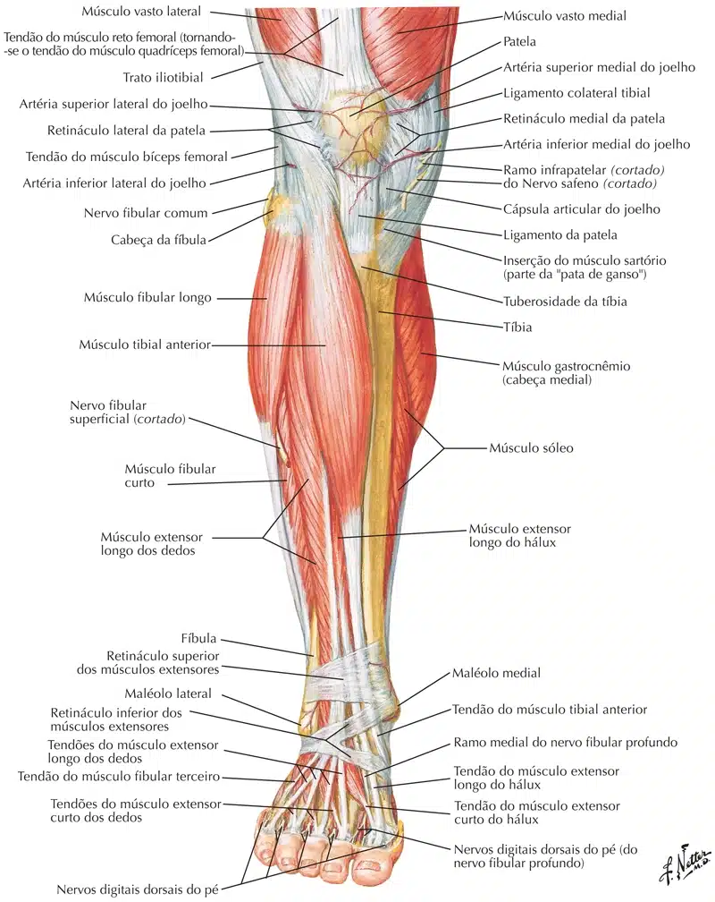
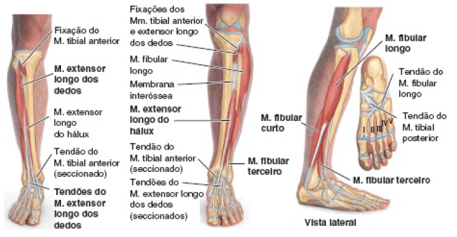
Inserção Proximal: Cabeça, 2/3 proximais da superfície lateral da fíbula e côndilo lateral da tíbia.
Inserção Distal: 1º metatarsal e cuneiforme medial.
Inervação: Nervo Fibular Superficial (L4 – S1).
Ação: Flexão plantar e eversão do pé.
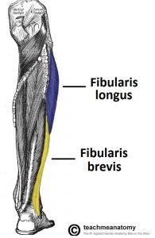
Inserção Proximal: 2/3 distais da face lateral da fíbula.
Inserção Distal: Base do 5º metatarsal.
Inervação: Nervo Fibular Superficial (L4 – S1).
Ação: Flexão plantar e eversão do pé.
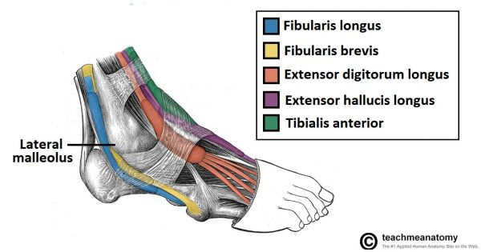
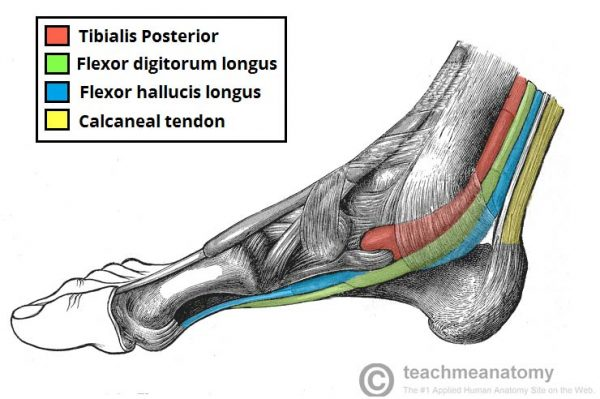
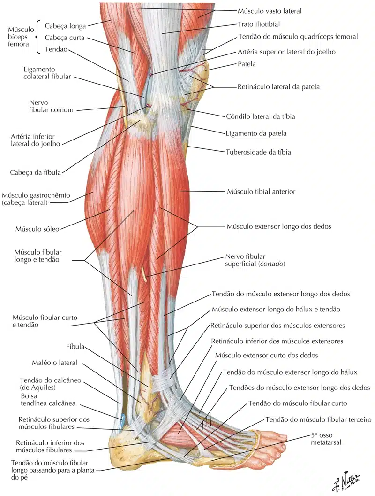
Os músculos superficiais formam a chamada “panturrilha” da perna.
Todos eles se inserem no calcâneo, através do tendão do calcâneo.
Cabeça medial:
Inserção Proximal: Côndilo medial do fêmur.
Inserção Distal: Calcâneo.
Inervação: Nervo Tibial (S1 – S2).
Ação: Flexão do joelho e flexão plantar do tornozelo.
Cabeça lateral:
Inserção Proximal: Côndilo lateral do fêmur.
Inserção Distal: Calcâneo.
Inervação: Nervo Tibial (S1 – S2).
Ação: Flexão do joelho e flexão plantar do tornozelo.
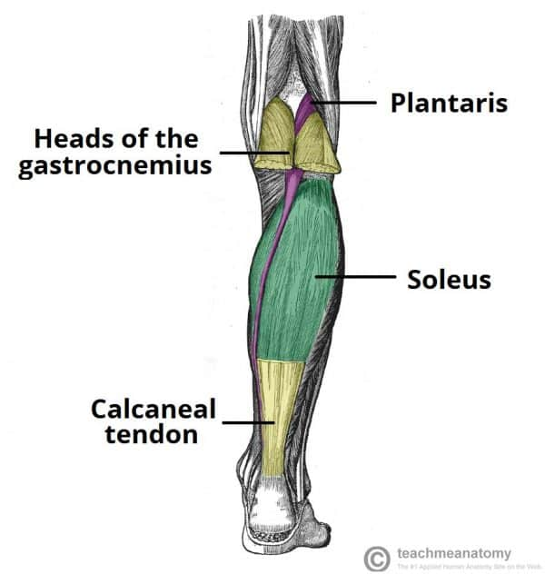
Inserção Proximal: 1/3 intermédio da face medial da tíbia e cabeça da fíbula.
Inserção Distal: Calcâneo (tendão dos gastrocnêmios).
Inervação: Nervo Tibial ( L5 – S1).
Ação: Flexão plantar do tornozelo.
Inserção Proximal: Côndilo lateral do fêmur.
Inserção Distal: Calcâneo.
Inervação: Nervo Tibial (L4 – S1).
Ação: Auxilia o tríceps sural.
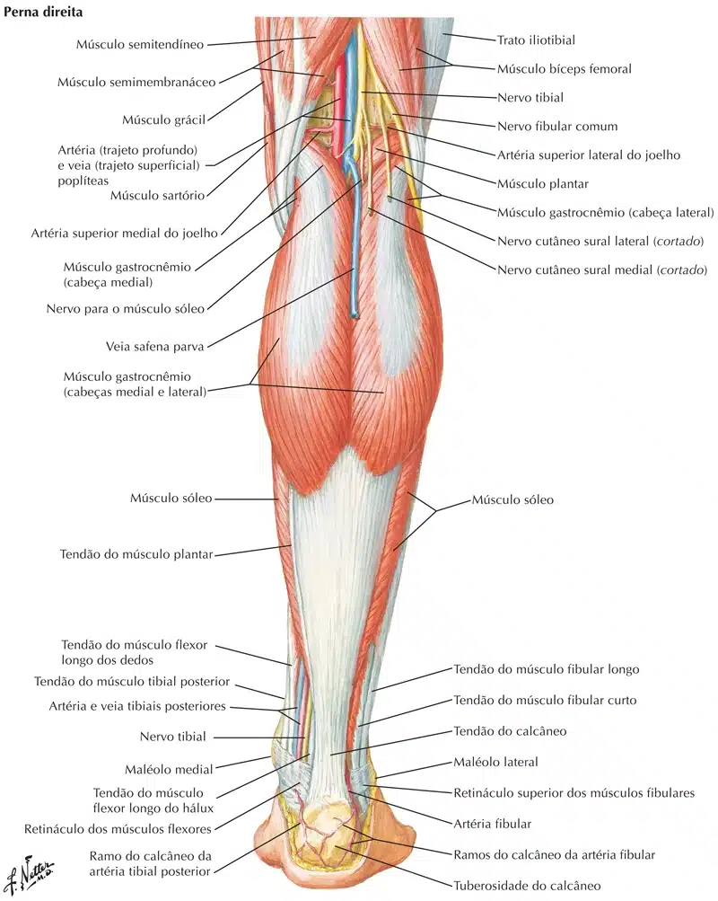
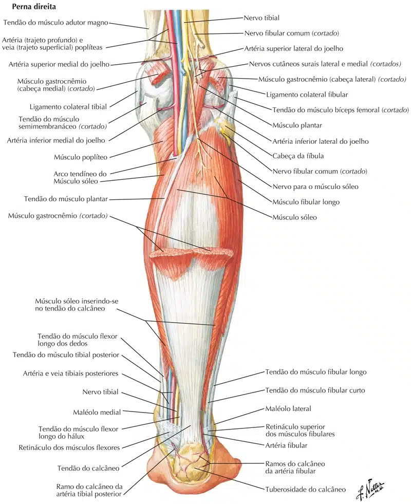
Inserção Proximal: Côndilo lateral do fêmur.
Inserção Distal: Linha solear da face posterior da tíbia.
Inervação: Nervo Tibial (L4 – S1).
Ação: Flexão e rotação medial do joelho.
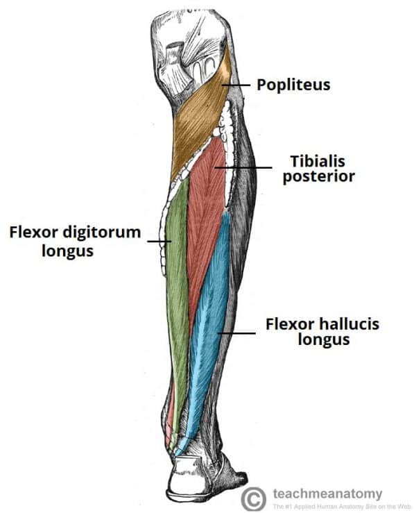
Inserção Proximal: Face posterior da tíbia e 2/3 proximais da fíbula e membrana interóssea.
Inserção Distal: 3 cuneiformes (medial , médio e lateral), cubóide, navicular e base do 2º ao 4º metatarsais.
Inervação: Nervo Tibial (L5 e S1).
Ação: Flexão plantar e inversão do pé.
Inserção Proximal: Face posterior da tíbia.
Inserção Distal: Falanges distais do 2º ao 5º dedo.
Inervação: Nervo Tibial (L5 – S1).
Ação: Flexão plantar e inversão do tornozelo, flexão da MF, IFP e IFD do
2º ao 5º dedos.
Inserção Proximal: 2/3 distais da face posterior da fíbula e membrana interóssea.
Inserção Distal: Falange distal do hálux.
Inervação: Nervo Tibial (L5 – S2).
Ação: Flexão do hálux, flexão plantar e inversão do tornozelo.
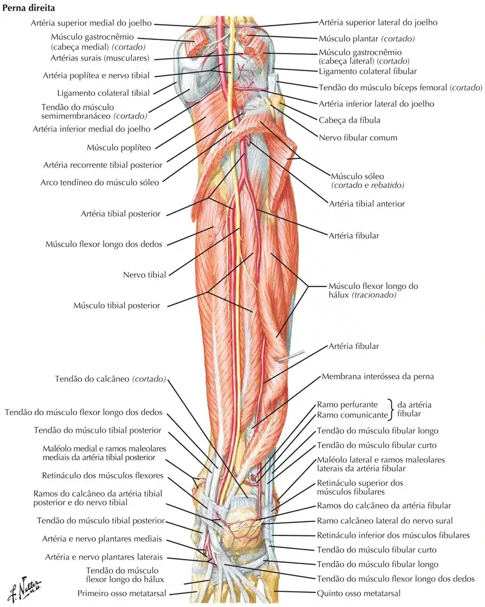